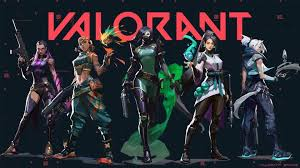
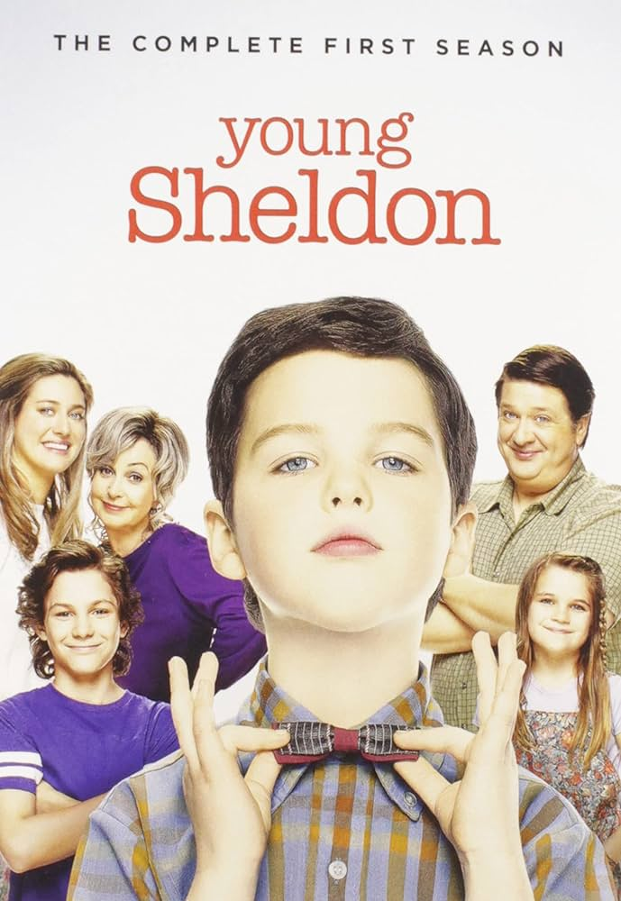
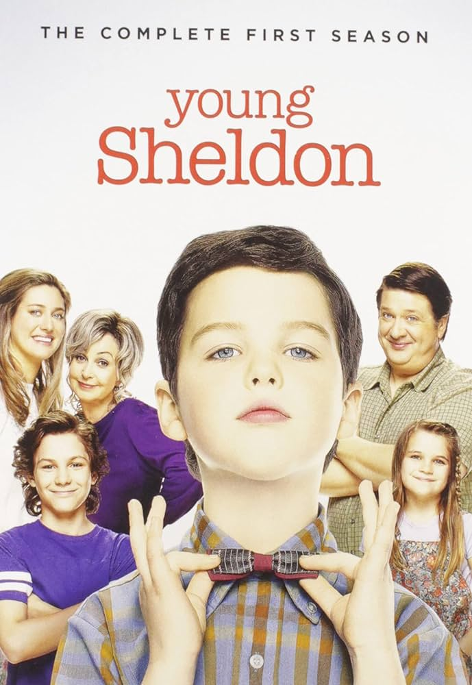
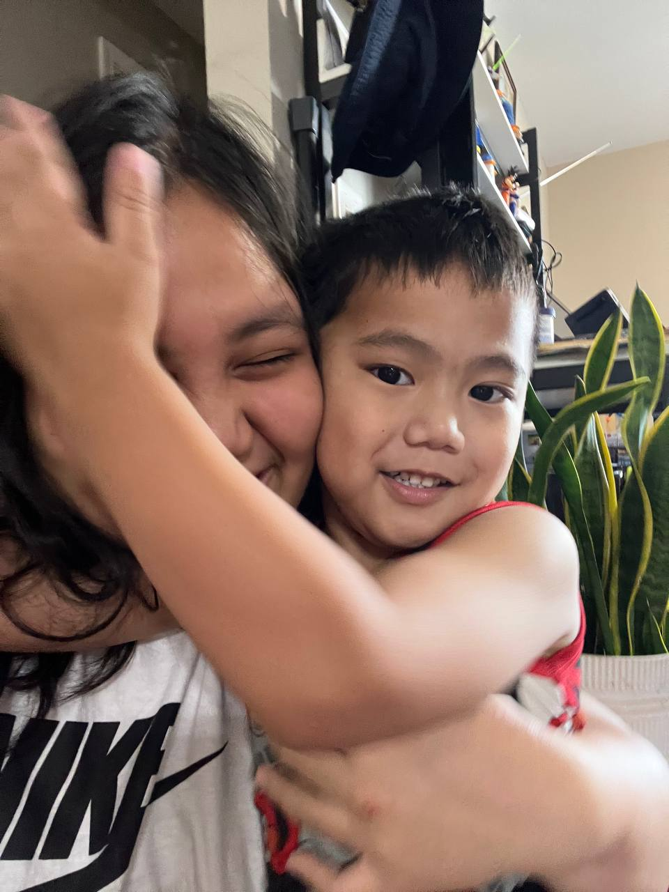
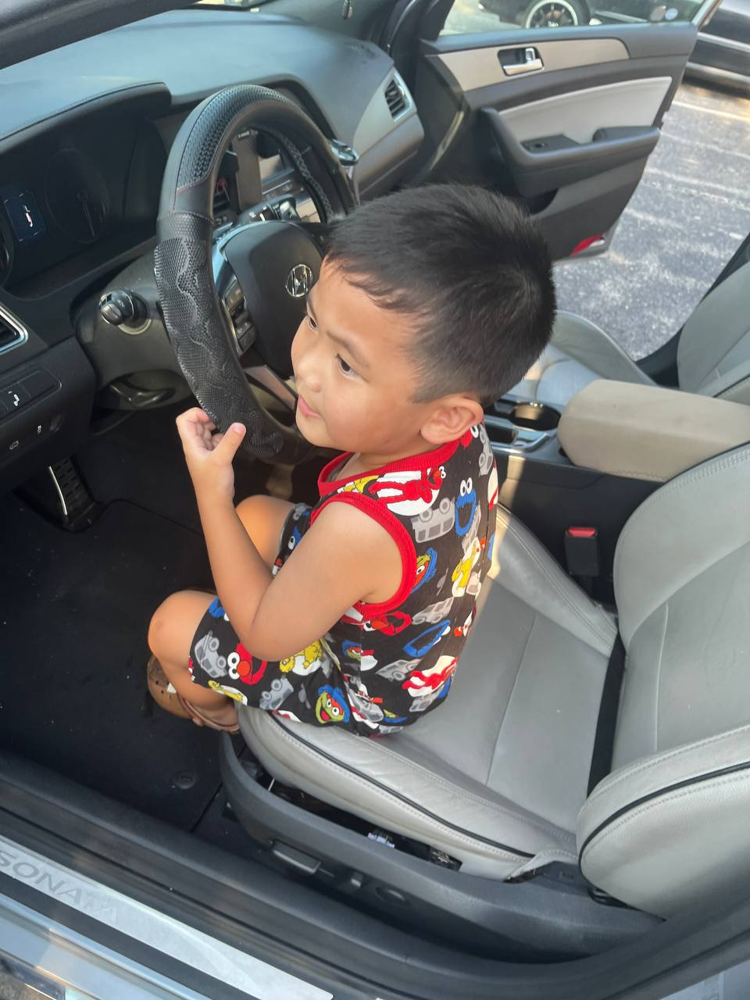
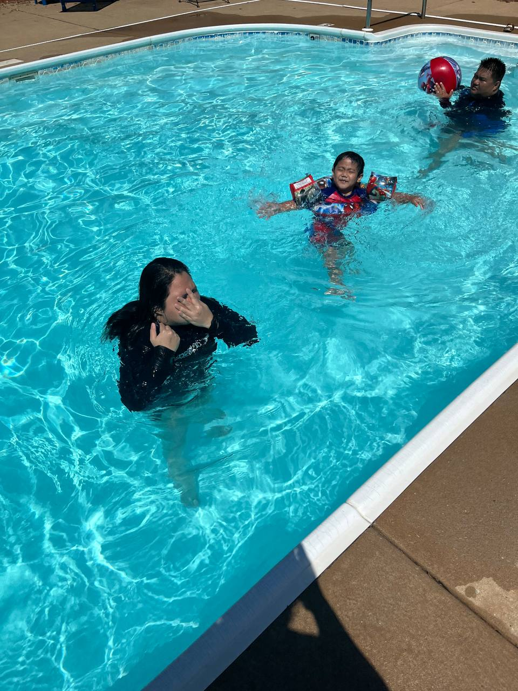

When I'm not doing anything school or work related, I love to...
-
play video games.
I enjoy playing games since I was a kid. It started from having my first Game Boy at age 5, then having access to online games ever since. I used to play a lot of mobile games such as Mobile Legends, PUBG, and CODM when I was in high school. Then, when the pandemic started, I began to play PC games such as Valorant and Stardew Valley.


-
watch a series or documentary.
When I want to take my mind off of everything that's happening, I just go watch something on Netflix or on free online sites.
Fun fact: I love watching or listening to snippets of True Crime Documentaries on Tiktok or Reels.
 

-
play with my little brother.
During weekends or on days he doesn't have school, he always asks to play with me. I love my little brother!
  
The age gap between my little brother and I is almost as same as the age gap with me and my mom.